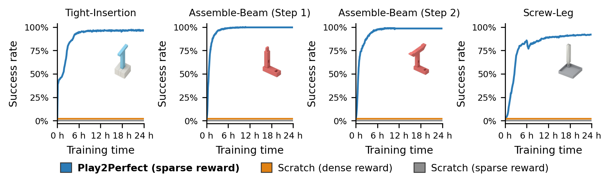

Play2Perfect is a 2-stage RL pipeline that first plays with diverse objects in free space to acquire reusable manipulation priors and then finetunes the policy on contact-rich, precise-assembly tasks for zero-shot sim-to-real transfer.
Play2Perfect Enables Rapid Learning of Assembly
Starting from a play-pretrained prior, Play2Perfect learns precise assembly with only
sparse rewards—far faster than training from scratch, which stalls near zero even with
the hand-crafted dense reward shaping we designed for it.

Watch Play2Perfect in Slow Speed
Our policy runs so fast that it is easy to miss its reactivity. Here, we slow down each rollout to highlight the micro-recoveries and corrections the policy makes to complete each assembly task.
Tight InsertionMulti-Part AssemblyScrewing
Recovery Behavior (Sound On 🔊)
Even after an initial failure, the policy continues acting closed-loop: continuously retrying until it completes the task.